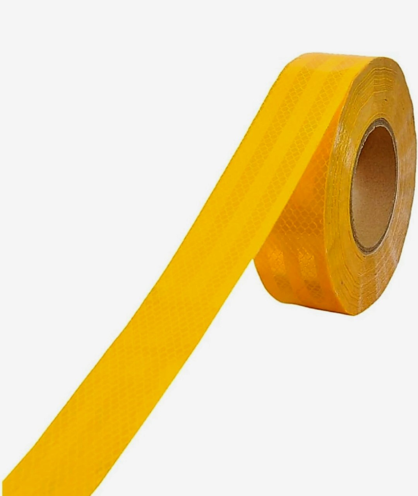
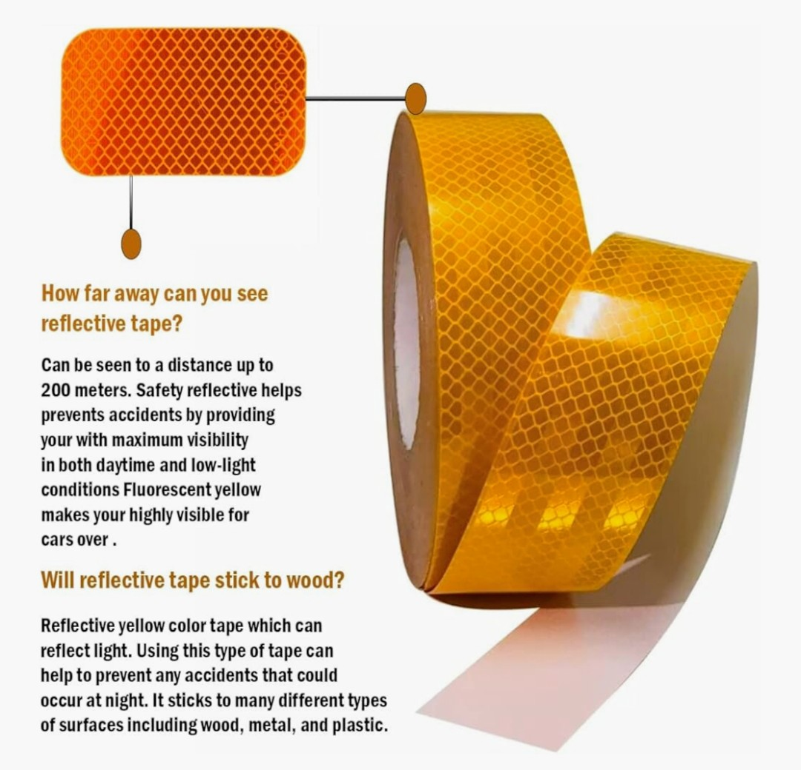
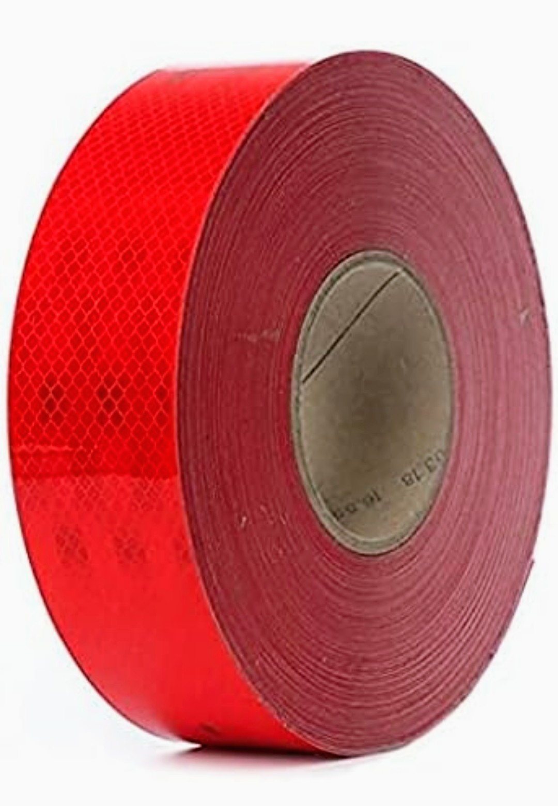
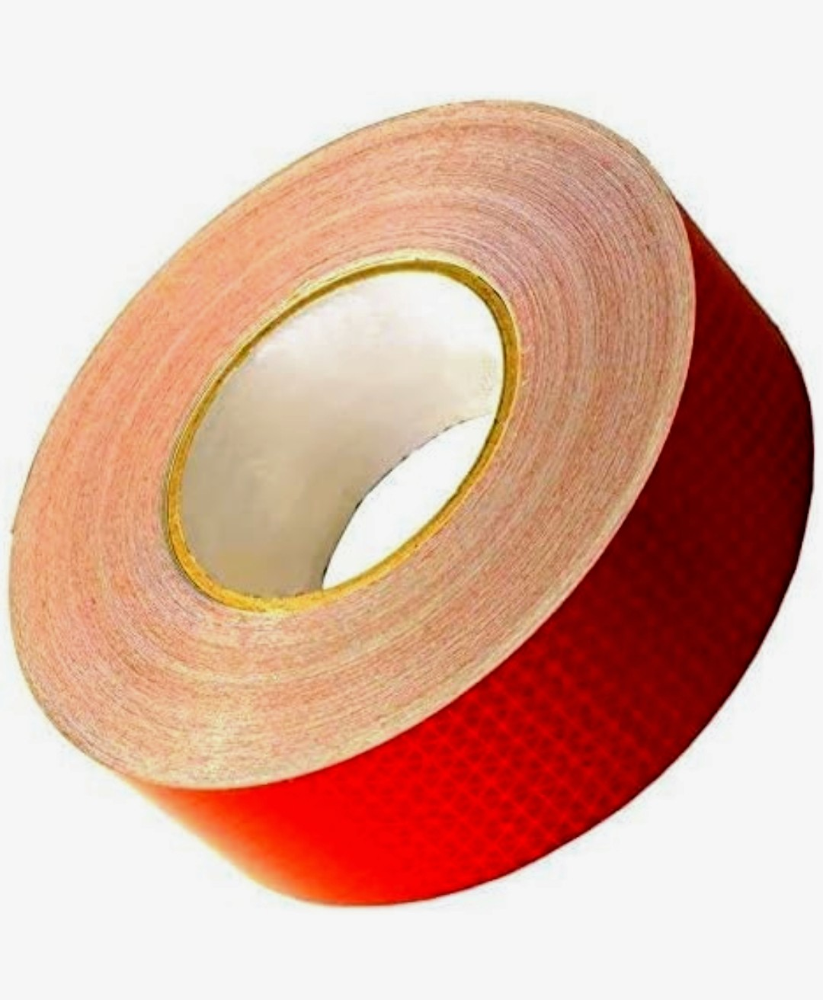
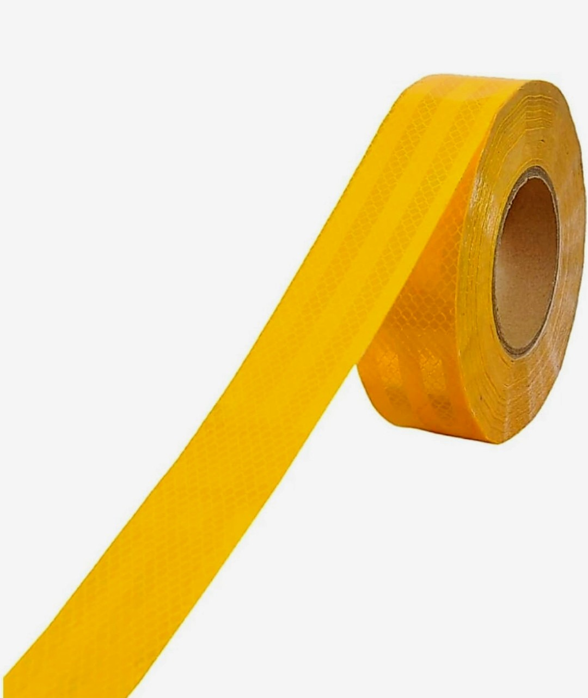
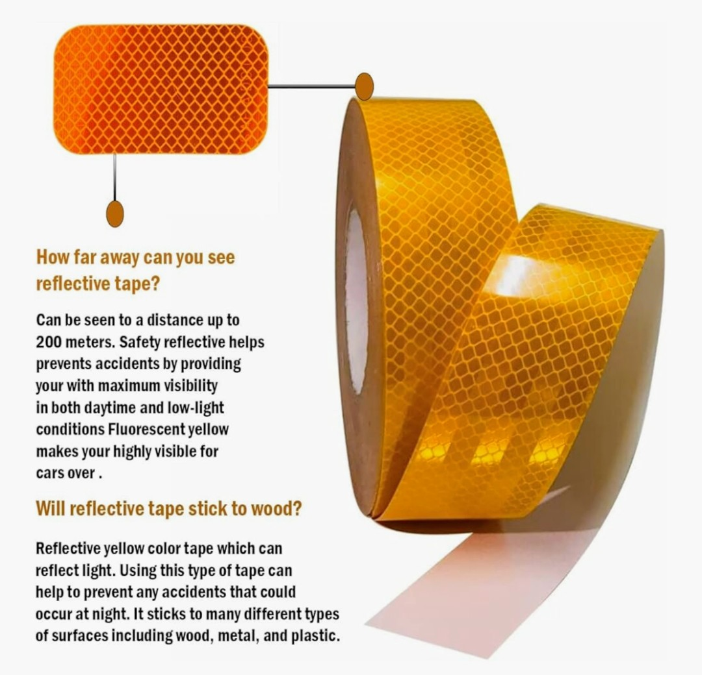
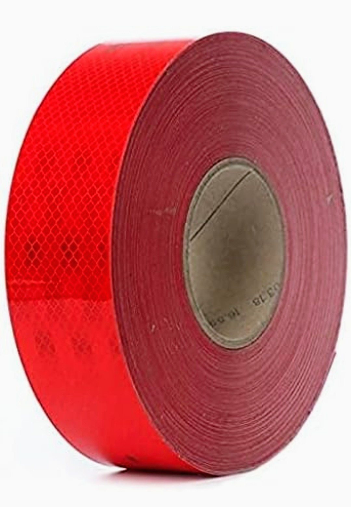
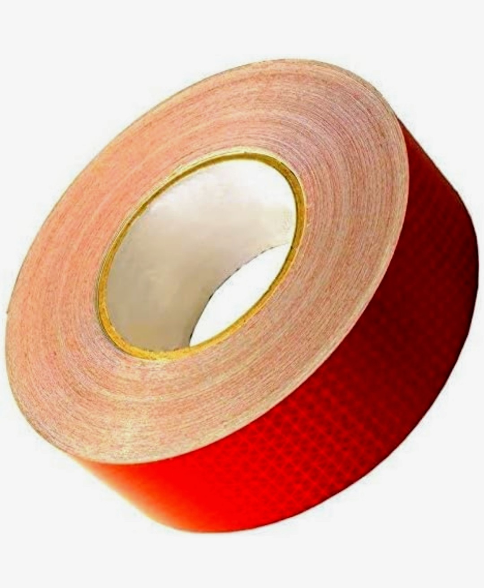

Product Overview
Reflective Tapes are safety marking materials designed to
reflect light back to its source, improving visibility
during night-time, fog, and low-light conditions.
These tapes are widely used on vehicles, road barriers,
construction equipment, and industrial areas to reduce
accidents and improve hazard awareness.
Key Features
- High reflectivity for night-time visibility
- Strong adhesive backing for secure bonding
- Weather and water resistant
- Durable for indoor and outdoor use
- Available in multiple colours and patterns
Specifications
- Material: PVC / PET with reflective coating
- Adhesive: Pressure-sensitive adhesive
- Width: Multiple sizes available
- Colour: Red, White, Yellow, Silver (varies)
- Usage: Safety marking and visibility enhancement
Applications & Use Cases
- Commercial and private vehicles
- Road dividers, barricades, and signboards
- Construction sites and safety zones
- Industrial equipment and warehouses
- Trailers, trucks, and transport vehicles
Best Suited For
- Transport operators and fleet owners
- Road safety and traffic management authorities
- Construction and infrastructure projects
- Industrial units and warehouses
Selection Note
For Indian road and industrial conditions, reflective tape
selection should be based on exposure to sunlight, dust,
and moisture. High-grade reflective tapes are recommended
for highways and heavy vehicle usage, while standard grades
are suitable for indoor and low-exposure applications.
Proper surface cleaning ensures long-lasting adhesion.
Commonly Used Along With
- Safety Cones and Barricades
- Warning Stickers and Signage Boards
- Vehicle Safety Accessories
Product FAQs
-
Where is reflective tape commonly used in India?
Reflective tape is widely used on trucks, trailers,
barricades, road signs, construction sites, and industrial
equipment to improve night-time visibility and safety.
-
Is reflective tape suitable for outdoor use?
Yes. Reflective tapes are designed to withstand outdoor
conditions, including rain, dust, and sunlight, depending
on the grade selected.
-
Does reflective tape lose brightness over time?
Prolonged exposure to harsh sunlight and abrasion may
gradually reduce reflectivity. Using high-quality tape
improves durability and visibility retention.
-
Can reflective tape be applied on curved surfaces?
Yes. Most reflective tapes are flexible and can be applied
on slightly curved surfaces with proper surface preparation.
-
Is surface preparation important before application?
Yes. Surfaces should be clean, dry, and free from dust or
oil to ensure strong adhesion and long service life.
-
Are bulk rolls and custom widths available?
Yes. Reflective tapes can be supplied in bulk rolls,
custom widths, and colour combinations for commercial
and project-based requirements.
 






